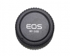

无忌
器材库
全部器材
产品年表
名词百科
榜单
器材库
> 镜头机身盖 > BF-16B/BF-16L

品色
BF-16B/BF-16L
分类
镜头机身盖
点评
0 条
图片
3 张
评测
1 篇
Canon 镜头机身盖：包括Canon镜头盖和Canon机身盖。防止灰尘和损伤, 便于存放。
产品类型
镜头机身盖
综合评分
暂无评分
无忌评测
暂无评测
规格参数
网友点评
(0)
产品图 / 样片
(3)
评测文章
(1)
详细规格
厂家推荐价格
25.00 （人民币）
适用机型
佳能单反相机
用途
防止灰尘和损伤，便于存放。
随附物品
镜头盖1个、机身盖1个
该产品暂无存档的网友点评
产品图 / 样片
品色 BF-16B/BF-16L
评测 / 相关文章
详细内容
（存档）
相关文章
［资讯］品色BF-16B/BF-16L机身镜头盖
（存档）